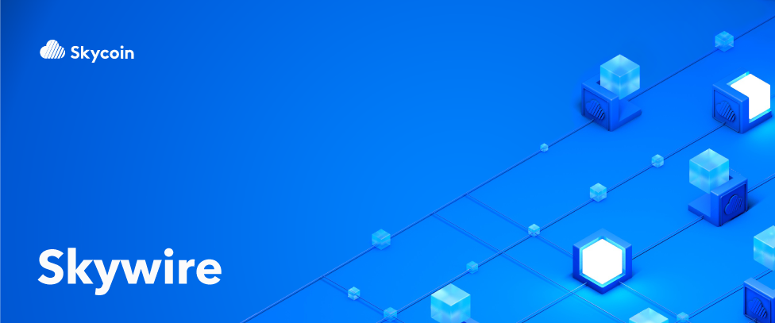

++++ +title = “Skywire: 次のインターネット” +tags = [ + “Skywire”, +] +bounty = 10 +date = “2017-11-07” +categories = [ + “Skywire”, +] ++++ + + + +2017年の春、FCC（アメリカ連邦通信委員会）はインターネットサービスプロバイダ（ISP）がユーザーのブラウジングに関する情報を収集・販売・使用するという提案を受け入れました。 +ISPはこれらを許可なく行うことができるようになります。利用者はこれをオプトアウトできません。ISPの顧客であることはすなわち、ISPはあなたを追跡できることを意味します。 + +ユーザーのトラッキング、信頼性の低いカバレッジ、高い金額、長い待ち時間、さらに貧弱なカスタマーサービスによりISPはアメリカで最も嫌われる企業となっています。 +それなのになぜ、ユーザーは特権を悪用する法案が出されてもなおISPにお金を払うのでしょうか。 + +答えは悲しいことですが、驚くことではありません。他の選択肢がないからです。 +ISPは貧弱なサービスに対してユーザーから莫大な金を払わせる独占権を持っています。 +今、脅威にさらされている「ネットの中立性」は2018年にむけて悪化する一方です。 + +そこで私たちはSkywireを立ち上げました。次の”インターネット”です。 +SkywireはISPの手の上に載せられた”権利”をユーザーの手に戻します。Skywireには多額の支払いや不公平な商習慣はありません。自給自足のネットワークであり、私たちで100％所有するもので、ユーザーコミュニティにより維持管理されています。 + +Skywireはどのようにして機能するのでしょうか。それは分散型のISPとして考えてください。Skywireはブロックチェーン技術を使用し、インターネットサービスを提供するためのP2Pコミュニティ主導のマーケットを構築していきます。速く、プライベートで、安全です。何よりもまず、ユーザーを第一に考えます。 + +あなたはSkywireを使用することでネットワークへ貢献して、利益を得ることができます。ユーザーはハードウェアノードを実行し、帯域幅とストレージを提供する代わりにコインを獲得できます。そのコインはメディアやネットワークリソースを消費する場合に使うことができます。このシステムによりSkywireは自立的かつ独立して動作します。使用するほどにネットワークは堅牢になります。Skywireはメッシュネットワークへの動機づけとなります。 + +Skywireはユーザーによって構築されます。企業ISPのネットワークとは異なりSkywireの決定はコミュニティによって行われます。ノードは信頼の輪(web of trust)に基づいて機能します。悪意のあるノードはコミュニティにより切断され、信頼できるノードが強化されます。 この信頼の輪を用いたコンセンサスアルゴリズムにより、Skywireは攻撃や搾取、操作から免れることができます。参加する誰もが発言権を持つシステムを作ります。 + +Skywireは他の”インターネット代替手段”（Internet alternatives）よりも速くて安全です。通信は暗号化されており、プライベートであるためブラウズしても追跡することはできません。大規模なISPで経験するような帯域制限やサービス停止はありません。月額150ドルを支払って独占的な通信会社からトラッキングされる代わりに、Skywireのユーザーはプライバシーを保護するインターネットサービスを手に入れるのです。 + +私たちにはSkywireがこれまで以上に必要となります。 FCCがネットの中立性を高めることに失敗したということは、大規模なISPがインターネット統制をこれからも続けることを意味するのです。手数料は上昇するでしょう。日常的な抑制、検閲、操作が普通となる可能性があります。ユーザーは、閲覧データ、プライバシーおよび個人情報を、利益を追求する企業により売買されるため、これまで以上に発言力を失います。 + +インターネットのコントロールを取り戻すのは私たち次第です。 SkywireはISPからネットワークハードウェアの主導権を奪い、それをコミュニティの手に委ねることでハードウェアレベルでのネットの中立性を保護します。そのP2Pネットワークは、企業のISPに頼るものではありません。私たちは共に、Skywireを使ってインターネットを改革することができます：Skywireは無料ですべてが公開されている”ユーザー駆動”のネットワークです。 +